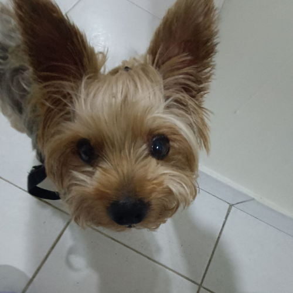

Miller es mi mascota, su nombre completo en realidad es Miller Fabian Salas Rojas (Si, tiene nombre completo). Miller es un perrito con aproximadamente 8 años, pero en edad perruna esos serian 48 años (Asi es, Miller es mayor que yo, su dueña).
A Miller le gusta mucho salir a pasear, todos los días salimos a que haga sus necesidades y todos los dias mantiene la misma emoción. Es un poco odioso, no le gustan mucho las fotos, la mayoría del tiempo suele ignorar a todo el mundo, sin embargo eso no hace que todos lo amemos menos.
Miller es el quinto integrante de mi familia, llegó de una manera inesperada, pues a pesar de que tiene 8 años, empezó a formar parte de nuestra familia a sus 3 años aproximadamente. Su comida favorita es el pollo, aunque en realidad tiene una muy larga lista de comida favorita, es un perrito muy protector y ladrón (que ladra mucho xd). Ama conocer a otros perros e incluso gatos, y sin duda alguna, es mi animal espiritual.
Miller fue adoptado desde bebé por una de mis tias, ella lo tuvo por 3 años aproximadamente, luego de eso,
en vista de todo lo que estaba ocurriendo en el país, mi tía junto con su familia tuvieron que emigrar a
España, pero el pasaje de Miller era muy costoso, por lo cual no podian llevarlo. Mi tía busco personas
que lo pudieran cuidar solo por un tiempo breve, asi ella podia irse, trabajar y poder hacer el
dinero suficiente para llevarselo luego. Claramente yo me ofreci a cuidarlo, pero las cosas no pasaron
exactamente como se planeaban. Mi tía al final no tuvo la oportunidad de llevarselo, hoy en dia, ella tiene
otro perrito, y bueno, nosotros aca nos encariñamos mucho con Miller y estoy segura que el también con
nosotros, convirtiéndose en parte de nuestra familia.
| Pelaje | Largo, sedoso con tonalidades grises y doradas |
| Color de ojos | Marrones |
| Ladrido | Agudo |
| Fecha de nacimiento | 8 de septiembre de 2017 |
| Estado civil | Soltero |
| Temperamento | Tranquilo |
| Pasatiempos | Dormir, pasear, jugar y comer |